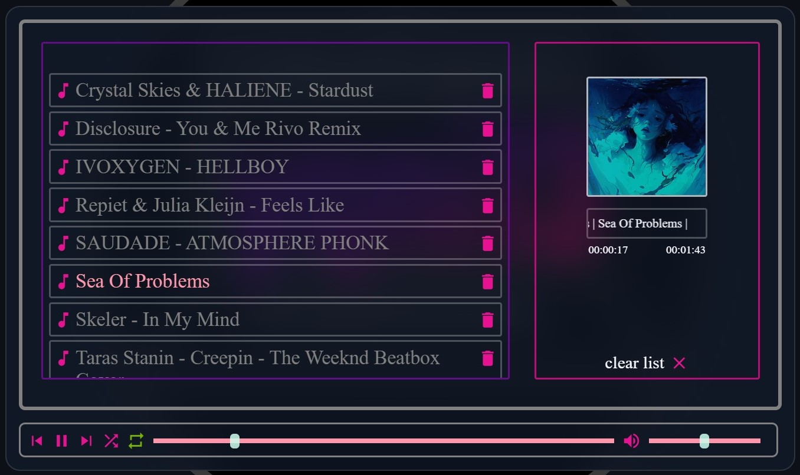

<div class="portfolio-frontend portfolio-wrapper">    
    <div class="card">
        
        <div class="card-text" href="https://github.com/yqni13/WEB_music">
            <h4>Music Player
                <a href="https://github.com/yqni13/WEB_music" target="_blank" class="a-github">
                    <i class="icon-GitHub"></i>
                </a>
            </h4>
            <p>
                Simple music player, displaying playlist and current playing song in seperate areas. Songs can be played randomly or in loop while pausing and adjusting time and volume.
                <br><br>
                Version: 1.0
            </p>
            <div class="card-technology">
                <a href="https://developer.mozilla.org/en-US/docs/Web/HTML" target="_blank">
                    <i class="icon-HTML5"></i>
                </a>
                <a href="https://developer.mozilla.org/en-US/docs/Web/CSS?retiredLocale=de" target="_blank">
                    <i class="icon-CSS3"></i>
                </a>
                <a href="https://developer.mozilla.org/en-US/docs/Web/JavaScript" target="_blank">
                    <i class="icon-Javascript"></i>
                </a>
            </div>
        </div>
    </div>
</div>